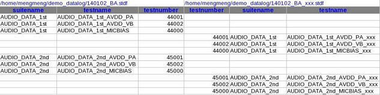

Name mapping file
Introduces how to modify the name mapping file to make the test item mappings.
After executing Generate Name Mapping File, a draft name mapping file name_mapping.xls is generated in the default directory:
/tmp/.vda/username/datalog_utilities/tmp/
There are usually two worksheets:
- Suite_Test
The worksheet named "Suite_Test" is used for "suite name, test name, test number" mapping. If suite name, test name and test number of two data log files are in the same row, it means the test items are mapped.
- Pin
The worksheet named "Pin" is used for pin name mapping, and it does not exist if there is no pin info in the data log files. If the pin names of two data log files are in the same row, it means the pins are mapped.
The test items or pins that are the same between the two data log files have already been put in the same row. For the test items or pins that are not mapping, you need to modify the file name_mapping.xls to put the corresponding content in the same row.
The figure below shows an example of the draft unmapped name_mapping.xls:

The figure below shows an example of the modified mapped name_mapping.xls:

Functional changes
- Introduced in SmarTest 7.3.2